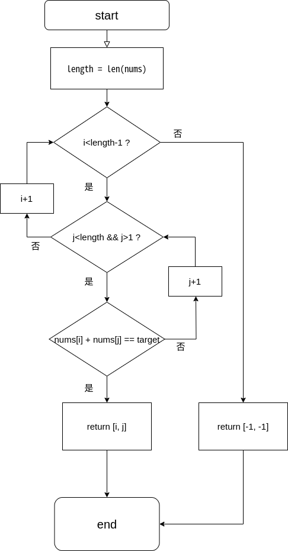
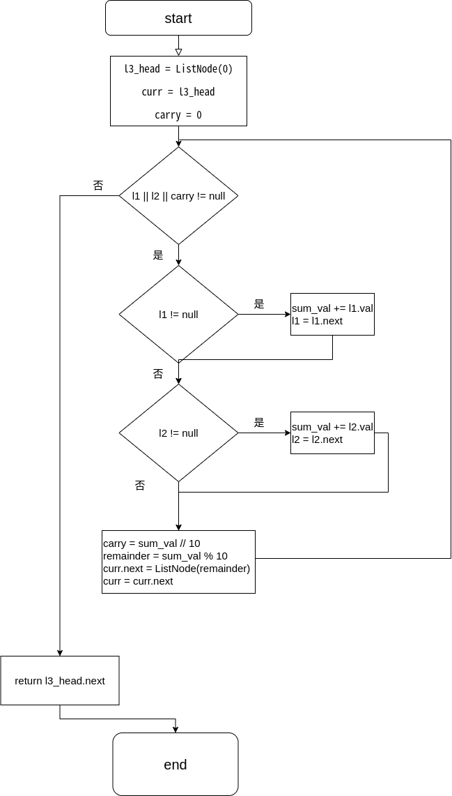
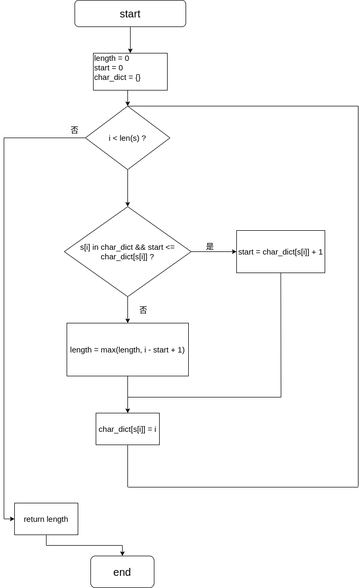
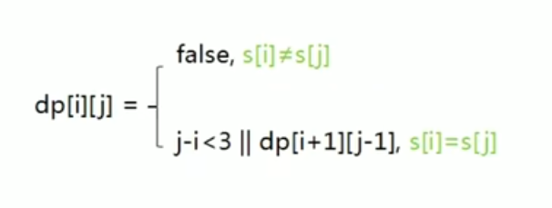
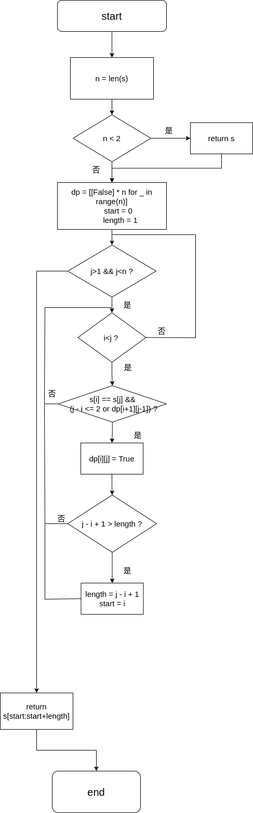
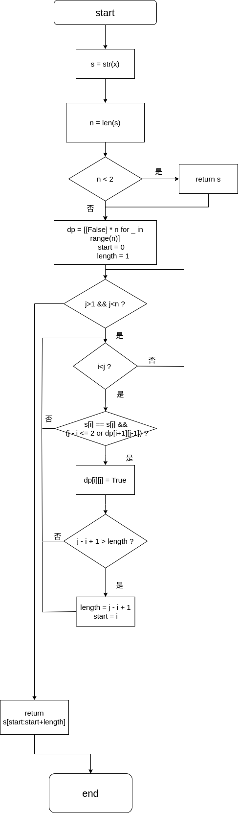
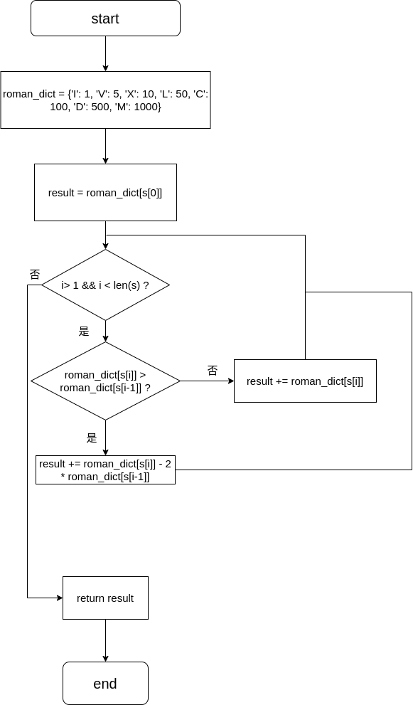
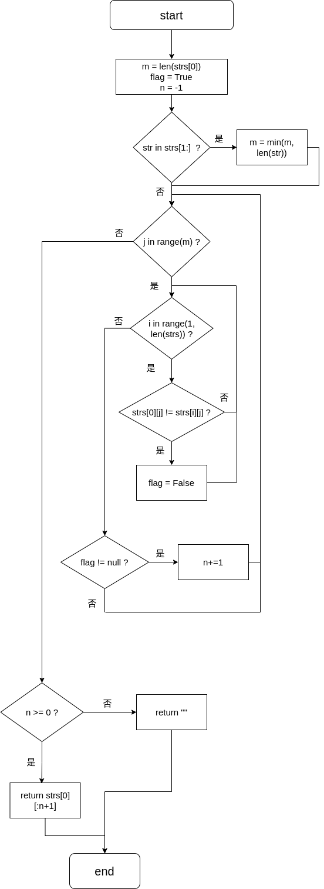
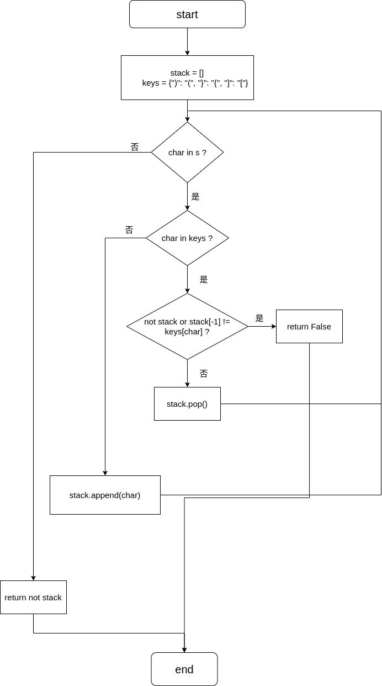

给定一个整数数组 nums 和一个整数目标值 target，请你在该数组中找出 和为目标值 target 的那 两个 整数，并返回它们的数组下标。你可以假设每种输入只会对应一个答案。但是，数组中同一个元素在答案里不能重复出现。你可以按任意顺序返回答案。
示例 1：
输入：nums = [2,7,11,15], target = 9 输出：[0,1] 解释：因为 nums[0] + nums[1] == 9 ，返回 [0, 1] 。
示例 2：
输入：nums = [3,2,4], target = 6 输出：[1,2]
示例 3：
输入：nums = [3,3], target = 6 输出：[0,1]
提示：
2 <= nums.length <= 104-109 <= nums[i] <= 109-109 <= target <= 109只会存在一个有效答案
进阶：你可以想出一个时间复杂度小于 O(n2) 的算法吗？
xclass Solution: def twoSum(self, nums: List[int], target: int) -> List[int]:
length = len(nums) #获取列表长度
for i in range(length-1): for j in range(i+1, length): #注意 i+1 ，否则会出现自己加自己的情况 if nums[i] + nums[j] == target: return [i, j] return [-1, -1] #不存在，则返回-1 
给你两个 非空 的链表，表示两个非负的整数。它们每位数字都是按照 逆序 的方式存储的，并且每个节点只能存储 一位 数字。
请你将两个数相加，并以相同形式返回一个表示和的链表。
你可以假设除了数字 0 之外，这两个数都不会以 0 开头。
示例 1：
输入：l1 = [2,4,3], l2 = [5,6,4] 输出：[7,0,8] 解释：342 + 465 = 807.
示例 2：
输入：l1 = [0], l2 = [0] 输出：[0]
示例 3：
输入：l1 = [9,9,9,9,9,9,9], l2 = [9,9,9,9] 输出：[8,9,9,9,0,0,0,1]
提示：
xxxxxxxxxx每个链表中的节点数在范围 [1, 100] 内0 <= Node.val <= 9题目数据保证列表表示的数字不含前导零
xxxxxxxxxxclass Solution: def addTwoNumbers(self, l1: Optional[ListNode], l2: Optional[ListNode]) -> Optional[ListNode]: l3_head = ListNode(0) # 创建 l3 的头节点,方便操作 curr = l3_head # 定义当前节点 carry = 0 # 进位值
while l1 or l2 or carry: sum_val = carry # 当前位的和等于进位值 if l1: sum_val += l1.val l1 = l1.next if l2: sum_val += l2.val l2 = l2.next carry = sum_val // 10 # 计算进位值，得到整数 remainder = sum_val % 10 # 当前位的余数
curr.next = ListNode(remainder) # 创建新节点 curr = curr.next # 移动到下一个节点 return l3_head.next # 返回链表，去掉头节点
给定一个字符串 s ，请你找出其中不含有重复字符的 最长子串 的长度。
示例 1:
输入: s = "abcabcbb" 输出: 3 解释: 因为无重复字符的最长子串是 "abc"，所以其长度为 3。
示例 2:
输入: s = "bbbbb" 输出: 1 解释: 因为无重复字符的最长子串是 "b"，所以其长度为 1。
示例 3:
输入: s = "pwwkew" 输出: 3 解释: 因为无重复字符的最长子串是 "wke"，所以其长度为 3。 请注意，你的答案必须是 子串 的长度，"pwke" 是一个子序列，不是子串。
提示：
xxxxxxxxxx0 <= s.length <= 5 * 104s 由英文字母、数字、符号和空格组成
xxxxxxxxxxclass Solution: def lengthOfLongestSubstring(self, s: str) -> int: length = 0 # 最长子串的长度 start = 0 # 子串的起始位置 char_dict = {} # 字符到下标的关系
for i in range(len(s)): if s[i] in char_dict and start <= char_dict[s[i]]: # 如果字符在前面出现过，且子串的起始位置在该字符出现位置的前方，则更新子串的起始位置 start = char_dict[s[i]] + 1 else: length = max(length, i - start + 1) # 若未重复出现，则计算最大长度
char_dict[s[i]] = i # 更新最新的对应关系
return length
给你一个字符串 s，找到 s 中最长的回文子串。
如果字符串的反序与原始字符串相同，则该字符串称为回文字符串。
示例 1：
输入：s = "babad" 输出："bab" 解释："aba" 同样是符合题意的答案。
示例 2：
输入：s = "cbbd" 输出："bb"
提示：
xxxxxxxxxx1 <= s.length <= 1000s 仅由数字和英文字母组成

xxxxxxxxxx class Solution: def longestPalindrome(self, s: str) -> str: n = len(s) if n < 2: return s
# 初始化二维数组 dp = [[False] * n for _ in range(n)] start = 0 length = 1 for j in range(1, n): for i in range(j): # 更新 dp[i][j] 的值 if s[i] == s[j] and (j - i <= 2 or dp[i+1][j-1]): dp[i][j] = True
# 更新最长回文子串的起始位置和长度 if j - i + 1 > length: length = j - i + 1 start = i
return s[start:start+length]
给你一个整数 x ，如果 x 是一个回文整数，返回 true ；否则，返回 false 。
回文数是指正序（从左向右）和倒序（从右向左）读都是一样的整数。
xxxxxxxxxx例如，121 是回文，而 123 不是。
示例 1：
输入：x = 121 输出：true
示例 2：
输入：x = -121 输出：false 解释：从左向右读, 为 -121 。 从右向左读, 为 121- 。因此它不是一个回文数。
示例 3：
输入：x = 10 输出：false 解释：从右向左读, 为 01 。因此它不是一个回文数。
提示：
xxxxxxxxxx-231 <= x <= 231 - 1
xxxxxxxxxxclass Solution: def isPalindrome(self, x: int) -> bool:
s = str(x) # 将x转换为string,利用动态规划判断是否为回文数
n = len(s) if n < 2: # 小于2时必定为回文数 return True
# 初始化二维数组 dp = [[False] * n for _ in range(n)] start = 0 length = 1
for j in range(1, n): for i in range(j): # 更新 dp[i][j] 的值 if s[i] == s[j] and (j - i <= 2 or dp[i+1][j-1]): dp[i][j] = True
# 更新最长回文子串的起始位置和长度 if j - i + 1 > length: length = j - i + 1 start = i if start == 0 and length == n: return True else: return False
罗马数字包含以下七种字符: I， V， X， L，C，D 和 M。
xxxxxxxxxx字符 数值I 1V 5X 10L 50C 100D 500M 1000
例如， 罗马数字 2 写做 II ，即为两个并列的 1 。12 写做 XII ，即为 X + II 。 27 写做 XXVII, 即为 XX + V + II 。
通常情况下，罗马数字中小的数字在大的数字的右边。但也存在特例，例如 4 不写做 IIII，而是 IV。数字 1 在数字 5 的左边，所表示的数等于大数 5 减小数 1 得到的数值 4 。同样地，数字 9 表示为 IX。这个特殊的规则只适用于以下六种情况：
I 可以放在 V (5) 和 X (10) 的左边，来表示 4 和 9。
X 可以放在 L (50) 和 C (100) 的左边，来表示 40 和 90。
C 可以放在 D (500) 和 M (1000) 的左边，来表示 400 和 900。
给定一个罗马数字，将其转换成整数。
示例 1:
xxxxxxxxxx输入: s = "III"输出: 3
示例 2:
xxxxxxxxxx输入: s = "IV"输出: 4
示例 3:
xxxxxxxxxx输入: s = "IX"输出: 9
示例 4:
xxxxxxxxxx输入: s = "LVIII"输出: 58解释: L = 50, V= 5, III = 3.
示例 5:
xxxxxxxxxx输入: s = "MCMXCIV"输出: 1994解释: M = 1000, CM = 900, XC = 90, IV = 4.
提示：
1 <= s.length <= 15
s 仅含字符 ('I', 'V', 'X', 'L', 'C', 'D', 'M')
题目数据保证 s 是一个有效的罗马数字，且表示整数在范围 [1, 3999] 内
题目所给测试用例皆符合罗马数字书写规则，不会出现跨位等情况。
IL 和 IM 这样的例子并不符合题目要求，49 应该写作 XLIX，999 应该写作 CMXCIX 。
关于罗马数字的详尽书写规则，可以参考 罗马数字 - Mathematics 。
xxxxxxxxxxclass Solution: def romanToInt(self, s: str) -> int: roman_dict = {'I': 1, 'V': 5, 'X': 10, 'L': 50, 'C': 100, 'D': 500, 'M': 1000} # 将result设为第一个字符对应的值 result = roman_dict[s[0]] # 遍历字符串，从第二个字符开始 for i in range(1, len(s)): # 如果当前字符的值比前一个字符的值大，则加上当前字符的值，并减去前一个字符的值两倍 if roman_dict[s[i]] > roman_dict[s[i-1]]: result += roman_dict[s[i]] - 2 * roman_dict[s[i-1]] # 否则直接加上当前字符的值 else: result += roman_dict[s[i]] return result
编写一个函数来查找字符串数组中的最长公共前缀。
如果不存在公共前缀，返回空字符串 ""。
示例 1：
输入：strs = ["flower","flow","flight"] 输出："fl"
示例 2：
输入：strs = ["dog","racecar","car"] 输出："" 解释：输入不存在公共前缀。
提示：
xxxxxxxxxx1 <= strs.length <= 2000 <= strs[i].length <= 200strs[i] 仅由小写英文字母组成
xxxxxxxxxxclass Solution: def longestCommonPrefix(self, strs: List[str]) -> str:
m = len(strs[0]) # strs中第一个元素的长度 flag = True # 用于判断各字符串中的字符是否与第一个字符串的字符相同 n = -1 # 从第一个字符开始，各字符串相同的个数-1，即哪些下标相同 # 用于找出strs中最短字符串的长度 for str in strs[1:]: m = min(m, len(str)) # 比较各字符串是否与第一个字符串相同，依次按位比较 for j in range(m): for i in range(1, len(strs)): if strs[0][j] != strs[i][j]: flag = False if flag: n+=1 # 若各字符串，第m位字符都相同，则将下标+1
if n >= 0: return strs[0][:n+1] # 返回相同的部分 else: return "" 
给定一个只包括 '('，')'，'{'，'}'，'['，']' 的字符串 s ，判断字符串是否有效。
有效字符串需满足：
xxxxxxxxxx左括号必须用相同类型的右括号闭合。左括号必须以正确的顺序闭合。每个右括号都有一个对应的相同类型的左括号。
示例 1：
输入：s = "()" 输出：true
示例 2：
输入：s = "()[]{}" 输出：true
示例 3：
输入：s = "(]" 输出：false
提示：
xxxxxxxxxx1 <= s.length <= 104s 仅由括号 '()[]{}' 组成
xxxxxxxxxxclass Solution: def isValid(self, s: str) -> bool: stack = [] # 使用栈来判断符号是否匹配 keys = {")": "(", "}": "{", "]": "["} for char in s: if char in keys: if not stack or stack[-1] != keys[char]: # 如果栈为空或栈顶元素与符号不匹配，则返回False return False stack.pop() else: stack.append(char) # 遇到左括号，入栈 return not stack # 栈为空时，not stack为True,表示匹配成功；若栈非空，则不匹配，返回False
将两个升序链表合并为一个新的 升序 链表并返回。新链表是通过拼接给定的两个链表的所有节点组成的。
示例 1：
输入：l1 = [1,2,4], l2 = [1,3,4] 输出：[1,1,2,3,4,4]
示例 2：
输入：l1 = [], l2 = [] 输出：[]
示例 3：
输入：l1 = [], l2 = [0] 输出：[0]
提示：
xxxxxxxxxx两个链表的节点数目范围是 [0, 50]-100 <= Node.val <= 100l1 和 l2 均按 非递减顺序 排列
xxxxxxxxxx# Definition for singly-linked list.# class ListNode:# def __init__(self, val=0, next=None):# self.val = val# self.next = nextclass Solution: def mergeTwoLists(self, list1: Optional[ListNode], list2: Optional[ListNode]) -> Optional[ListNode]: head = ListNode(0) # 创建一个头节点，方便操作 curr = head # 将当前节点指向头节点
while list1 and list2: if list1.val < list2.val: curr.next = list1 list1 = list1.next else: curr.next = list2 list2 = list2.next curr = curr.next
# 如果 list1 或 list2 没链接完，将剩下的节点直接连接到新链表的尾部 if list1: curr.next = list1 if list2: curr.next = list2
return head.next # 返回链表，去除头节点
给你一个 升序排列 的数组 nums ，请你 原地 删除重复出现的元素，使每个元素 只出现一次 ，返回删除后数组的新长度。元素的 相对顺序 应该保持 一致 。然后返回 nums 中唯一元素的个数。
考虑 nums 的唯一元素的数量为 k ，你需要做以下事情确保你的题解可以被通过：
xxxxxxxxxx更改数组 nums ，使 nums 的前 k 个元素包含唯一元素，并按照它们最初在 nums 中出现的顺序排列。nums 的其余元素与 nums 的大小不重要。返回 k 。
判题标准:
系统会用下面的代码来测试你的题解:
int[] nums = [...]; // 输入数组 int[] expectedNums = [...]; // 长度正确的期望答案
int k = removeDuplicates(nums); // 调用
assert k == expectedNums.length; for (int i = 0; i < k; i++) { assert nums[i] == expectedNums[i]; }
如果所有断言都通过，那么您的题解将被 通过。
示例 1：
输入：nums = [1,1,2] 输出：2, nums = [1,2,_] 解释：函数应该返回新的长度 2 ，并且原数组 nums 的前两个元素被修改为 1, 2 。不需要考虑数组中超出新长度后面的元素。
示例 2：
输入：nums = [0,0,1,1,1,2,2,3,3,4] 输出：5, nums = [0,1,2,3,4] 解释：函数应该返回新的长度 5 ， 并且原数组 nums 的前五个元素被修改为 0, 1, 2, 3, 4 。不需要考虑数组中超出新长度后面的元素。
提示：
xxxxxxxxxx1 <= nums.length <= 3 * 104-104 <= nums[i] <= 104nums 已按 升序 排列
xxxxxxxxxxclass Solution: def removeDuplicates(self, nums: List[int]) -> int:
if not nums: return 0 i = 0 # 慢指针 for j in range(1, len(nums)): # 快指针 if nums[j] != nums[i]: i += 1 nums[i] = nums[j] return i + 1
给你一个数组 nums 和一个值 val，你需要 原地 移除所有数值等于 val 的元素，并返回移除后数组的新长度。
不要使用额外的数组空间，你必须仅使用 O(1) 额外空间并 原地 修改输入数组。
元素的顺序可以改变。你不需要考虑数组中超出新长度后面的元素。
说明:
为什么返回数值是整数，但输出的答案是数组呢?
请注意，输入数组是以「引用」方式传递的，这意味着在函数里修改输入数组对于调用者是可见的。
你可以想象内部操作如下:
// nums 是以“引用”方式传递的。也就是说，不对实参作任何拷贝 int len = removeElement(nums, val);
// 在函数里修改输入数组对于调用者是可见的。 // 根据你的函数返回的长度, 它会打印出数组中 该长度范围内 的所有元素。 for (int i = 0; i < len; i++) { print(nums[i]); }
示例 1：
输入：nums = [3,2,2,3], val = 3 输出：2, nums = [2,2] 解释：函数应该返回新的长度 2, 并且 nums 中的前两个元素均为 2。你不需要考虑数组中超出新长度后面的元素。例如，函数返回的新长度为 2 ，而 nums = [2,2,3,3] 或 nums = [2,2,0,0]，也会被视作正确答案。
示例 2：
输入：nums = [0,1,2,2,3,0,4,2], val = 2 输出：5, nums = [0,1,4,0,3] 解释：函数应该返回新的长度 5, 并且 nums 中的前五个元素为 0, 1, 3, 0, 4。注意这五个元素可为任意顺序。你不需要考虑数组中超出新长度后面的元素。
提示：
xxxxxxxxxx0 <= nums.length <= 1000 <= nums[i] <= 500 <= val <= 100
xxxxxxxxxx# 与上题类似，略有不同class Solution: def removeElement(self, nums: List[int], val: int) -> int: i = 0
for j in range(len(nums)): if nums[j] != val: nums[i] = nums[j] i += 1 return i
给你两个字符串 word1 和 word2 。请你从 word1 开始，通过交替添加字母来合并字符串。如果一个字符串比另一个字符串长，就将多出来的字母追加到合并后字符串的末尾。
返回 合并后的字符串 。
示例 1：
输入：word1 = "abc", word2 = "pqr" 输出："apbqcr" 解释：字符串合并情况如下所示： word1： a b c word2： p q r 合并后： a p b q c r
示例 2：
输入：word1 = "ab", word2 = "pqrs" 输出："apbqrs" 解释：注意，word2 比 word1 长，"rs" 需要追加到合并后字符串的末尾。 word1： a b word2： p q r s 合并后： a p b q r s
示例 3：
输入：word1 = "abcd", word2 = "pq" 输出："apbqcd" 解释：注意，word1 比 word2 长，"cd" 需要追加到合并后字符串的末尾。 word1： a b c d word2： p q 合并后： a p b q c d
提示：
xxxxxxxxxx1 <= word1.length, word2.length <= 100word1 和 word2 由小写英文字母组成
xxxxxxxxxxclass Solution {public: string mergeAlternately(string word1, string word2) { string word; int a = 0, b = 0, c = 0;
while(a < word1.length() && b < word2.length()) { word.append(word1, a, 1); c++; a++; word.append(word2, b, 1); c++; b++; }
if(a < word1.length()) { word.append(word1, a); } if(b < word2.length()) { word.append(word2, b); } return word; }};